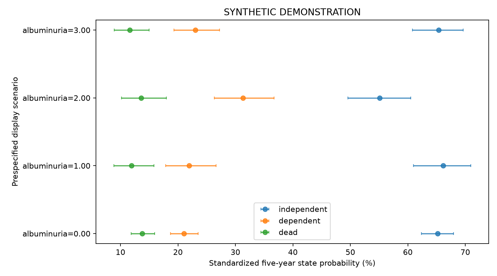

SYNTHETIC DEMONSTRATION — NOT PATIENT RESULTS
五项独立队列；不要求Hcy。患者行和ID仅保存在本地分析目录，不进入本报告。
| step | remaining | excluded_here |
|---|---|---|
| clinical_image_union | 2400 | 0 |
| adult_ischemic_stroke | 2400 | 0 |
| available_true_icv | 2400 | 0 |
| available_wmh_ml | 2400 | 0 |
| alive_at_month3 | 2400 | 0 |
| both_uacr_observed | 2268 | 132 |
| no_five_year_state_contradiction | 2268 | 0 |
| known_five_year_functional_state | 2103 | 165 |
| analysis | study | tier | family | status | n | outcome_unknown | parameters | imputations | p | statistic | df1 | df2 | method | m | estimate | lower | upper | ratio | ratio_lower | ratio_upper | r | p_bh_secondary |
|---|---|---|---|---|---|---|---|---|---|---|---|---|---|---|---|---|---|---|---|---|---|---|
| primary | kidney | primary | multinomial | ESTIMATED | 2103 | 0 | 62 | 2 | 0.5331 | 0.3885 | 1 | 1.097e+07 | Rubin scalar Wald | 2 | 0.09072 | -0.1945 | 0.376 | 1.095 | 0.8232 | 1.456 | NaN | NaN |
| complete_case | kidney | sensitivity | multinomial | ESTIMATED | 1908 | 0 | 62 | 1 | 0.576 | 0.3128 | 1 | inf | Rubin scalar Wald | 1 | 0.08524 | -0.2135 | 0.384 | 1.089 | 0.8077 | 1.468 | NaN | NaN |
| baseline_structure | kidney | secondary | ols | ESTIMATED | 2400 | 0 | 22 | 2 | 0.1823 | 1.779 | 1 | 8.025e+07 | Rubin scalar Wald | 2 | -0.02317 | -0.05723 | 0.01088 | NaN | NaN | NaN | NaN | 0.1823 |
| continuous_uacr3 | kidney | secondary | multinomial | ESTIMATED | 2103 | 0 | 60 | 2 | 0.001037 | 10.76 | 1 | 3.291e+07 | Rubin scalar Wald | 2 | 0.2996 | 0.1206 | 0.4786 | 1.349 | 1.128 | 1.614 | NaN | 0.002074 |
| incremental_albuminuria | kidney | secondary | multinomial | ESTIMATED | 2103 | 0 | 62 | 2 | 0.001604 | 5.088 | 3 | 2.163e+07 | D1 pooled multivariate Wald | 2 | NaN | NaN | NaN | NaN | NaN | NaN | 0.0003041 | 0.002139 |
| clinical_wmh_only | kidney | secondary | multinomial | ESTIMATED | 2103 | 0 | 56 | 2 | 3.585e-06 | 21.47 | 1 | 5.002e+14 | Rubin scalar Wald | 2 | 0.2677 | 0.1545 | 0.381 | 1.307 | 1.167 | 1.464 | NaN | 1.434e-05 |
| clinical_same_subset_core | kidney | sensitivity | multinomial | ESTIMATED | 2103 | 0 | 62 | 2 | 0.5331 | 0.3885 | 1 | 1.097e+07 | Rubin scalar Wald | 2 | 0.09072 | -0.1945 | 0.376 | 1.095 | 0.8232 | 1.456 | NaN | NaN |
| clinical_extended | kidney | sensitivity | multinomial | ESTIMATED | 2103 | 0 | 74 | 2 | 0.5301 | 0.3941 | 1 | 2.19e+06 | Rubin scalar Wald | 2 | 0.0916 | -0.1944 | 0.3776 | 1.096 | 0.8233 | 1.459 | NaN | NaN |
| observation_weighted | kidney | sensitivity | multinomial | ESTIMATED | 2103 | 165 | 62 | 2 | 0.5279 | 0.3985 | 1 | 3.804e+08 | Rubin scalar Wald | 2 | 0.09168 | -0.193 | 0.3763 | 1.096 | 0.8245 | 1.457 | NaN | NaN |
多分类系数取指数表示 P(该状态)/P(独立) 的比值之比，不能标为HR。联合检验显著不代表每个系数都显著。

| estimate | se | lower | upper | p | df | m | within_variance | between_variance | term | scale | ratio | ratio_lower | ratio_upper |
|---|---|---|---|---|---|---|---|---|---|---|---|---|---|
| -2.102 | 0.2803 | -2.651 | -1.552 | 6.523e-14 | 2.697e+05 | 2 | 0.07842 | 0.0001009 | dependent:intercept | relative_probability_ratio | 0.1223 | 0.07058 | 0.2118 |
| 0.2685 | 0.05829 | 0.1542 | 0.3827 | 4.104e-06 | 5.296e+08 | 2 | 0.003397 | 9.842e-08 | dependent:wmh_ml | relative_probability_ratio | 1.308 | 1.167 | 1.466 |
| 0.02625 | 0.1612 | -0.2897 | 0.3422 | 0.8706 | 2.711e+08 | 2 | 0.02599 | 1.052e-06 | dependent:albuminuria_1 | relative_probability_ratio | 1.027 | 0.7485 | 1.408 |
| 0.5966 | 0.1566 | 0.2896 | 0.9035 | 0.0001398 | 4.06e+06 | 2 | 0.02452 | 8.117e-06 | dependent:albuminuria_2 | relative_probability_ratio | 1.816 | 1.336 | 2.468 |
| 0.09072 | 0.1455 | -0.1945 | 0.376 | 0.5331 | 1.097e+07 | 2 | 0.02118 | 4.264e-06 | dependent:albuminuria_3 | relative_probability_ratio | 1.095 | 0.8232 | 1.456 |
| 0.07816 | 0.1309 | -0.1784 | 0.3347 | 0.5504 | 1.382e+08 | 2 | 0.01713 | 9.716e-07 | dependent:age | relative_probability_ratio | 1.081 | 0.8366 | 1.398 |
| 0.2064 | 0.1469 | -0.08161 | 0.4943 | 0.1602 | 1.128e+07 | 2 | 0.02158 | 4.284e-06 | dependent:age_rcs | relative_probability_ratio | 1.229 | 0.9216 | 1.639 |
| 0.1451 | 0.11 | -0.07045 | 0.3606 | 0.1871 | 4.565e+06 | 2 | 0.01209 | 3.773e-06 | dependent:sex_2 | relative_probability_ratio | 1.156 | 0.932 | 1.434 |
| 0.119 | 0.1571 | -0.189 | 0.4269 | 0.4489 | 2.452e+07 | 2 | 0.02468 | 3.324e-06 | dependent:smoking_2 | relative_probability_ratio | 1.126 | 0.8278 | 1.533 |
| 0.1972 | 0.151 | -0.09878 | 0.4931 | 0.1916 | 4.436e+07 | 2 | 0.0228 | 2.282e-06 | dependent:smoking_3 | relative_probability_ratio | 1.218 | 0.9059 | 1.637 |
| 0.08833 | 0.1586 | -0.2226 | 0.3993 | 0.5776 | 8.682e+06 | 2 | 0.02516 | 5.694e-06 | dependent:smoking_4 | relative_probability_ratio | 1.092 | 0.8004 | 1.491 |
| 0.1677 | 0.1607 | -0.1472 | 0.4826 | 0.2966 | 8.294e+06 | 2 | 0.0258 | 5.975e-06 | dependent:drinking_2 | relative_probability_ratio | 1.183 | 0.8631 | 1.62 |
| 0.1042 | 0.1566 | -0.2028 | 0.4112 | 0.506 | 9.89e+06 | 2 | 0.02453 | 5.201e-06 | dependent:drinking_3 | relative_probability_ratio | 1.11 | 0.8164 | 1.509 |
| 0.2557 | 0.1541 | -0.04631 | 0.5578 | 0.09703 | 1.106e+10 | 2 | 0.02375 | 1.506e-07 | dependent:drinking_4 | relative_probability_ratio | 1.291 | 0.9547 | 1.747 |
| 0.3493 | 0.1105 | 0.1327 | 0.5659 | 0.00157 | 6.572e+07 | 2 | 0.01221 | 1.004e-06 | dependent:hypertension_2 | relative_probability_ratio | 1.418 | 1.142 | 1.761 |
| -0.01883 | 0.1099 | -0.2342 | 0.1965 | 0.8639 | 1.027e+12 | 2 | 0.01207 | 7.944e-09 | dependent:diabetes_2 | relative_probability_ratio | 0.9813 | 0.7912 | 1.217 |
| 0.19 | 0.1101 | -0.02575 | 0.4058 | 0.08433 | 1.937e+06 | 2 | 0.01211 | 5.806e-06 | dependent:prior_stroke_2 | relative_probability_ratio | 1.209 | 0.9746 | 1.5 |
| -0.009431 | 0.0187 | -0.04608 | 0.02721 | 0.614 | 2.029e+05 | 2 | 0.0003488 | 5.173e-07 | dependent:bmi | relative_probability_ratio | 0.9906 | 0.955 | 1.028 |
| 0.07181 | 0.1737 | -0.2687 | 0.4123 | 0.6793 | 4.134e+04 | 2 | 0.03003 | 9.895e-05 | dependent:education_2 | relative_probability_ratio | 1.074 | 0.7644 | 1.51 |
| 0.05317 | 0.1807 | -0.3033 | 0.4096 | 0.7689 | 193.1 | 2 | 0.03031 | 0.001567 | dependent:education_3 | relative_probability_ratio | 1.055 | 0.7384 | 1.506 |
| 0.02383 | 0.1764 | -0.3218 | 0.3695 | 0.8925 | 1.245e+08 | 2 | 0.0311 | 1.858e-06 | dependent:education_4 | relative_probability_ratio | 1.024 | 0.7248 | 1.447 |
| 0.01767 | 0.1778 | -0.3307 | 0.3661 | 0.9208 | 4.656e+06 | 2 | 0.03158 | 9.761e-06 | dependent:education_5 | relative_probability_ratio | 1.018 | 0.7184 | 1.442 |
| 0.146 | 0.1931 | -0.2328 | 0.5248 | 0.4498 | 2154 | 2 | 0.0365 | 0.0005358 | dependent:cysc3 | relative_probability_ratio | 1.157 | 0.7923 | 1.69 |
| -0.01667 | 0.03696 | -0.08911 | 0.05578 | 0.652 | 1.81e+13 | 2 | 0.001366 | 2.141e-10 | dependent:sbp3 | relative_probability_ratio | 0.9835 | 0.9147 | 1.057 |
| -0.02708 | 0.1104 | -0.2434 | 0.1892 | 0.8061 | 2.366e+08 | 2 | 0.01218 | 5.278e-07 | dependent:raas_1 | relative_probability_ratio | 0.9733 | 0.784 | 1.208 |
| -0.07172 | 0.1591 | -0.3836 | 0.2402 | 0.6522 | 7.047e+08 | 2 | 0.02532 | 6.359e-07 | dependent:mrs3_1 | relative_probability_ratio | 0.9308 | 0.6814 | 1.271 |
| 0.3823 | 0.1533 | 0.08188 | 0.6827 | 0.01263 | 1.301e+10 | 2 | 0.02349 | 1.373e-07 | dependent:mrs3_2 | relative_probability_ratio | 1.466 | 1.085 | 1.979 |
| 0.5188 | 0.2061 | 0.1148 | 0.9228 | 0.01185 | 1.079e+09 | 2 | 0.04249 | 8.625e-07 | dependent:mrs3_3 | relative_probability_ratio | 1.68 | 1.122 | 2.516 |
| 0.5219 | 0.2384 | 0.05458 | 0.9892 | 0.02861 | 5.39e+07 | 2 | 0.05684 | 5.162e-06 | dependent:mrs3_4 | relative_probability_ratio | 1.685 | 1.056 | 2.689 |
| 0.7072 | 0.3003 | 0.1187 | 1.296 | 0.01852 | 2.905e+06 | 2 | 0.0901 | 3.526e-05 | dependent:mrs3_5 | relative_probability_ratio | 2.028 | 1.126 | 3.653 |
| -0.05042 | 0.06111 | -0.1702 | 0.06935 | 0.4093 | 1.571e+09 | 2 | 0.003734 | 6.281e-08 | dependent:icv_ml | relative_probability_ratio | 0.9508 | 0.8435 | 1.072 |
| -2.414 | 0.3508 | -3.102 | -1.726 | 7.425e-12 | 2611 | 2 | 0.1207 | 0.001606 | dead:intercept | relative_probability_ratio | 0.08946 | 0.04496 | 0.178 |
| 0.2323 | 0.07161 | 0.09191 | 0.3726 | 0.001181 | 5.293e+10 | 2 | 0.005129 | 1.486e-08 | dead:wmh_ml | relative_probability_ratio | 1.261 | 1.096 | 1.452 |
| -0.1659 | 0.2017 | -0.5613 | 0.2295 | 0.4108 | 1.379e+06 | 2 | 0.04066 | 2.31e-05 | dead:albuminuria_1 | relative_probability_ratio | 0.8471 | 0.5705 | 1.258 |
| 0.1781 | 0.2037 | -0.2212 | 0.5774 | 0.382 | 1.159e+10 | 2 | 0.0415 | 2.57e-07 | dead:albuminuria_2 | relative_probability_ratio | 1.195 | 0.8016 | 1.781 |
| -0.1776 | 0.184 | -0.5382 | 0.183 | 0.3343 | 4.339e+09 | 2 | 0.03385 | 3.426e-07 | dead:albuminuria_3 | relative_probability_ratio | 0.8373 | 0.5838 | 1.201 |
| 0.1262 | 0.1694 | -0.2057 | 0.4582 | 0.456 | 1.554e+06 | 2 | 0.02866 | 1.534e-05 | dead:age | relative_probability_ratio | 1.135 | 0.8141 | 1.581 |
| 0.2813 | 0.1802 | -0.07184 | 0.6344 | 0.1185 | 8.867e+05 | 2 | 0.03243 | 2.298e-05 | dead:age_rcs | relative_probability_ratio | 1.325 | 0.9307 | 1.886 |
| 0.04225 | 0.1366 | -0.2256 | 0.31 | 0.7572 | 9.634e+05 | 2 | 0.01865 | 1.268e-05 | dead:sex_2 | relative_probability_ratio | 1.043 | 0.7981 | 1.363 |
| 0.2715 | 0.1911 | -0.1031 | 0.6461 | 0.1554 | 6.843e+06 | 2 | 0.03651 | 9.309e-06 | dead:smoking_2 | relative_probability_ratio | 1.312 | 0.9021 | 1.908 |
| 0.1589 | 0.1902 | -0.2138 | 0.5317 | 0.4034 | 3.817e+07 | 2 | 0.03617 | 3.903e-06 | dead:smoking_3 | relative_probability_ratio | 1.172 | 0.8075 | 1.702 |
| 0.05405 | 0.2001 | -0.3382 | 0.4463 | 0.7871 | 5.913e+06 | 2 | 0.04003 | 1.098e-05 | dead:smoking_4 | relative_probability_ratio | 1.056 | 0.7131 | 1.562 |
| 0.2926 | 0.1977 | -0.09484 | 0.6801 | 0.1388 | 4.745e+07 | 2 | 0.03907 | 3.782e-06 | dead:drinking_2 | relative_probability_ratio | 1.34 | 0.9095 | 1.974 |
| 0.1511 | 0.1957 | -0.2324 | 0.5347 | 0.44 | 9.836e+08 | 2 | 0.03829 | 8.14e-07 | dead:drinking_3 | relative_probability_ratio | 1.163 | 0.7926 | 1.707 |
| 0.2479 | 0.1938 | -0.132 | 0.6278 | 0.2009 | 1.28e+07 | 2 | 0.03756 | 7e-06 | dead:drinking_4 | relative_probability_ratio | 1.281 | 0.8764 | 1.874 |
| 0.09777 | 0.1364 | -0.1696 | 0.3652 | 0.4736 | 2.09e+10 | 2 | 0.01861 | 8.583e-08 | dead:hypertension_2 | relative_probability_ratio | 1.103 | 0.844 | 1.441 |
| -0.2187 | 0.1364 | -0.486 | 0.04869 | 0.1089 | 6.984e+05 | 2 | 0.01859 | 1.484e-05 | dead:diabetes_2 | relative_probability_ratio | 0.8036 | 0.6151 | 1.05 |
| 0.004819 | 0.1364 | -0.2625 | 0.2722 | 0.9718 | 9.678e+05 | 2 | 0.01859 | 1.261e-05 | dead:prior_stroke_2 | relative_probability_ratio | 1.005 | 0.7691 | 1.313 |
| -0.03043 | 0.02327 | -0.07604 | 0.01518 | 0.191 | 2.875e+04 | 2 | 0.0005383 | 2.129e-06 | dead:bmi | relative_probability_ratio | 0.97 | 0.9268 | 1.015 |
| -0.002055 | 0.2395 | -0.4755 | 0.4714 | 0.9932 | 140.7 | 2 | 0.05251 | 0.003222 | dead:education_2 | relative_probability_ratio | 0.9979 | 0.6216 | 1.602 |
| 0.2163 | 0.2295 | -0.2368 | 0.6694 | 0.3474 | 171.5 | 2 | 0.04866 | 0.002682 | dead:education_3 | relative_probability_ratio | 1.241 | 0.7892 | 1.953 |
| 0.1964 | 0.2224 | -0.2396 | 0.6323 | 0.3773 | 6.682e+06 | 2 | 0.04945 | 1.276e-05 | dead:education_4 | relative_probability_ratio | 1.217 | 0.787 | 1.882 |
| 0.4303 | 0.2258 | -0.01559 | 0.8761 | 0.05847 | 167.7 | 2 | 0.04707 | 0.002625 | dead:education_5 | relative_probability_ratio | 1.538 | 0.9845 | 2.402 |
| 0.2759 | 0.2361 | -0.1869 | 0.7387 | 0.2427 | 2.741e+05 | 2 | 0.05565 | 7.099e-05 | dead:cysc3 | relative_probability_ratio | 1.318 | 0.8295 | 2.093 |
| 0.02835 | 0.04608 | -0.06197 | 0.1187 | 0.5385 | 3.813e+06 | 2 | 0.002122 | 7.249e-07 | dead:sbp3 | relative_probability_ratio | 1.029 | 0.9399 | 1.126 |
| 0.132 | 0.1361 | -0.1349 | 0.3988 | 0.3324 | 1.733e+09 | 2 | 0.01853 | 2.968e-07 | dead:raas_1 | relative_probability_ratio | 1.141 | 0.8738 | 1.49 |
| 0.1151 | 0.1867 | -0.2507 | 0.481 | 0.5374 | 1.076e+13 | 2 | 0.03484 | 7.079e-09 | dead:mrs3_1 | relative_probability_ratio | 1.122 | 0.7783 | 1.618 |
| 0.1891 | 0.1906 | -0.1846 | 0.5627 | 0.3213 | 2.555e+07 | 2 | 0.03634 | 4.793e-06 | dead:mrs3_2 | relative_probability_ratio | 1.208 | 0.8314 | 1.755 |
| -0.05438 | 0.2894 | -0.6215 | 0.5127 | 0.8509 | 6.072e+08 | 2 | 0.08372 | 2.265e-06 | dead:mrs3_3 | relative_probability_ratio | 0.9471 | 0.5371 | 1.67 |
| 0.3237 | 0.3026 | -0.2694 | 0.9168 | 0.2848 | 1.644e+11 | 2 | 0.09157 | 1.506e-07 | dead:mrs3_4 | relative_probability_ratio | 1.382 | 0.7638 | 2.501 |
| 0.3973 | 0.3936 | -0.3741 | 1.169 | 0.3127 | 6.528e+07 | 2 | 0.1549 | 1.278e-05 | dead:mrs3_5 | relative_probability_ratio | 1.488 | 0.6879 | 3.218 |
| 0.03228 | 0.07591 | -0.1165 | 0.1811 | 0.6707 | 3e+10 | 2 | 0.005763 | 2.218e-08 | dead:icv_ml | relative_probability_ratio | 1.033 | 0.89 | 1.198 |
| albuminuria | state | probability | lower | upper | ci |
|---|---|---|---|---|---|
| 0 | independent | 0.652 | 0.6236 | 0.6794 | mean probability; Rubin variance; logit-delta pointwise CI; covariate distribution fixed |
| 0 | dependent | 0.2102 | 0.1871 | 0.2354 | mean probability; Rubin variance; logit-delta pointwise CI; covariate distribution fixed |
| 0 | dead | 0.1378 | 0.1185 | 0.1596 | mean probability; Rubin variance; logit-delta pointwise CI; covariate distribution fixed |
| 1 | independent | 0.6617 | 0.6101 | 0.7097 | mean probability; Rubin variance; logit-delta pointwise CI; covariate distribution fixed |
| 1 | dependent | 0.2194 | 0.1784 | 0.2666 | mean probability; Rubin variance; logit-delta pointwise CI; covariate distribution fixed |
| 1 | dead | 0.119 | 0.08827 | 0.1585 | mean probability; Rubin variance; logit-delta pointwise CI; covariate distribution fixed |
| 2 | independent | 0.5511 | 0.4957 | 0.6052 | mean probability; Rubin variance; logit-delta pointwise CI; covariate distribution fixed |
| 2 | dependent | 0.313 | 0.2635 | 0.3672 | mean probability; Rubin variance; logit-delta pointwise CI; covariate distribution fixed |
| 2 | dead | 0.1359 | 0.1015 | 0.1797 | mean probability; Rubin variance; logit-delta pointwise CI; covariate distribution fixed |
| 3 | independent | 0.6536 | 0.6081 | 0.6964 | mean probability; Rubin variance; logit-delta pointwise CI; covariate distribution fixed |
| 3 | dependent | 0.2305 | 0.1932 | 0.2725 | mean probability; Rubin variance; logit-delta pointwise CI; covariate distribution fixed |
| 3 | dead | 0.116 | 0.08894 | 0.1498 | mean probability; Rubin variance; logit-delta pointwise CI; covariate distribution fixed |
完成模型 2；参数数 62；最大设计条件数 4.56。完整诊断见 fit_diagnostics.json。
缺失处理依赖MAR假设。功能状态图为固定访视结局的标准化概率，不是首次失能的累积发生率。血压分析是实测血压的条件关联。次要分析报告研究内BH-FDR；总汇报另列固定五项Holm校正。